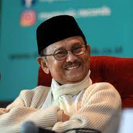

B. J. Habibie

B. J. Habibie dijuluki sebagai bapak teknologi indonesia
Biografi B. J. Habibie
- Prof. Dr.ing. Ir. H. Bacharuddin Jusuf Habibie, FREng[1] (25 Juni 1936 – 11 September 2019)[2] adalah Presiden Republik Indonesia yang ketiga. Sebelumnya, B.J. Habibie menjabat sebagai Wakil Presiden Republik Indonesia ke-7, menggantikan Try Sutrisno. B. J. Habibie menggantikan Soeharto yang mengundurkan diri dari jabatan presiden pada tanggal 21 Mei 1998.[3][4] Sebelum memasuki dunia politik, Habibie dikenal luas sebagai seorang profesor dan ilmuwan dalam teknologi aviasi internasional dan satu-satunya presiden Indonesia berlatarbelakang teknokrat.
- B.J. Habibie kemudian digantikan oleh Abdurrahman Wahid[5] (Gus Dur) yang terpilih sebagai presiden pada 20 Oktober 1999 oleh MPR hasil Pemilu 1999. Dengan menjabat selama 2 bulan dan 7 hari (sebagai wakil presiden) dan juga selama 1 tahun dan 5 bulan (sebagai presiden), B. J. Habibie merupakan Wakil Presiden dan juga Presiden Indonesia dengan masa jabatan terpendek.[6]
- B. J. Habibie merupakan presiden Indonesia pertama yang terlahir di luar Jawa dan berasal dari etnis Gorontalo, Sulawesi[7][8] dari garis keturunan ayahnya yang berasal dari Kabila, Gorontalo dan etnis Jawa dari ibunya yang berasal dari Yogyakarta.[9]
- Habibie belajar tentang keilmuan teknik mesin di Fakultas Teknik Universitas Indonesia Bandung (sekarang Institut Teknologi Bandung) pada tahun 1954. Pada 1955–1965, Habibie melanjutkan studi teknik penerbangan, spesialisasi konstruksi pesawat terbang, di RWTH Aachen, Jerman Barat. Menerima gelar diploma insinyur pada 1960 dan gelar doktor insinyur pada 1965 dengan predikat summa cum laude.
For more information, check out on Wikipedia. Developed by @ Halommoan Nababan